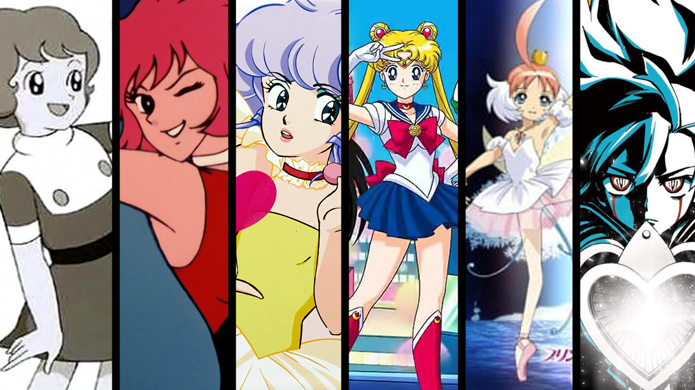
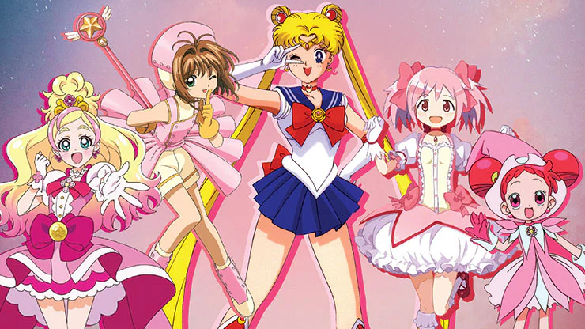

El Mahō Shōjo y su magia

Un sueño de libertad
¿Dónde empieza todo? ¿Quién puso las bases para que el genero, aupado por las "Sailor Moon", se convirtiera en uno de los más populares dentro del imaginario japonés? El llamado Mahô Shôjo, anime protagonizado por estudiantes que se transforman en guerreras mágicas, se remonta a los primeros días de la animación japonesa emitida por televisión. Pero las Magical Girls de 1960 eran muy diferentes a las que hoy en día conocemos y su evolución es un interesante reflejo de cómo la concepción del género femenino y su imagen han cambiado en la sociedad japonesa.

La magia moderna
Pasada la época de las "Sailor Moon", llegó un periodo de tiempo en el que surgieron incontables imitaciones y parodias del híbrido genérico que había supuesto la popular serie, siguiendo así el esquema arquetípico que suelen sufrir los subgéneros y del cual ya hablamos en el post dedicado a la evolución del slasher a lo largo de los años. Cuando el género puede reflexionar sobre si mismo es cuando el discurso que habían estado utilizando hasta la fecha cambia y mira en otra dirección, hacia lados más tenebrosos, oscuros, y también, adultos.
Es el caso de la serie que nos atañe, "Madoka Magica", llamada en Japón "Puella Magi Madoka Magica", que explora cuestiones como la homosexualidad y el precio del poder mágico desde esta estética happy y colorida que distingue al Mahô Shôjo, algo que contrasta con la profunda oscuridad de sus temas. Y también algo que Carlos Vermut debió tener muy presente cuando las eligió a ellas como su fuente de inspiración. Todo tiene un precio, y este debe ser pagado, ya sea con sangre, magia o muerte. Una sentencia que los ojos de Lucía Pollán retransmiten a la perfección en esa última y penetrante mirada que nos regala la sensacional "Magical Girl". Ya conocéis sus orígenes, ahora solo tenéis que descubrirlos.